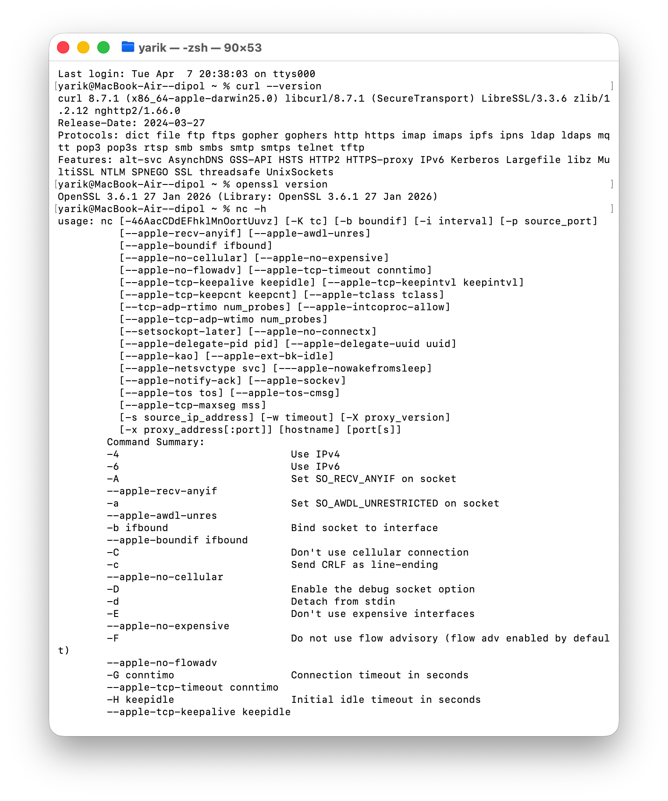
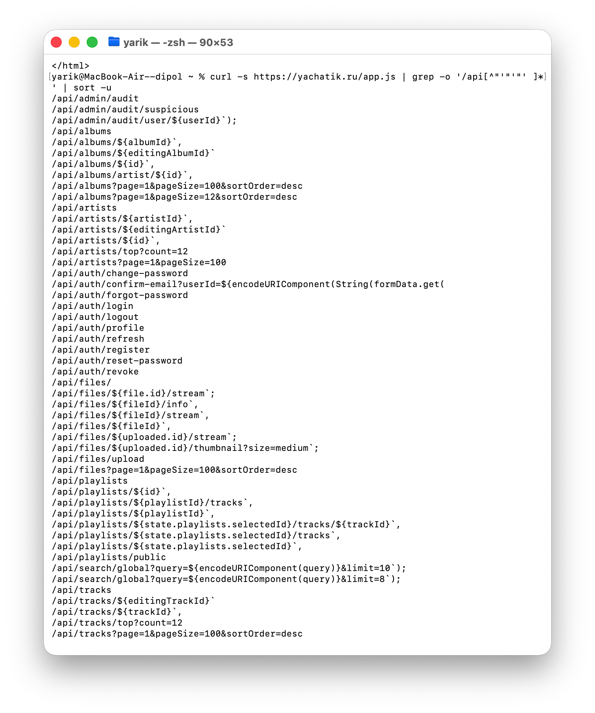
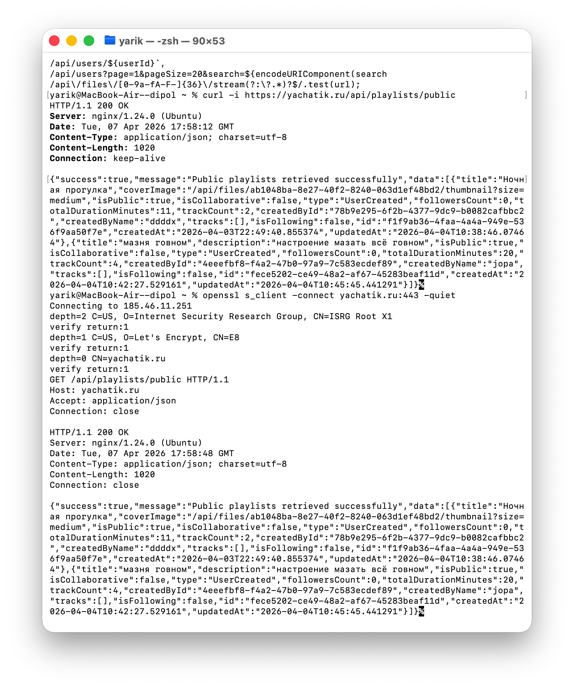
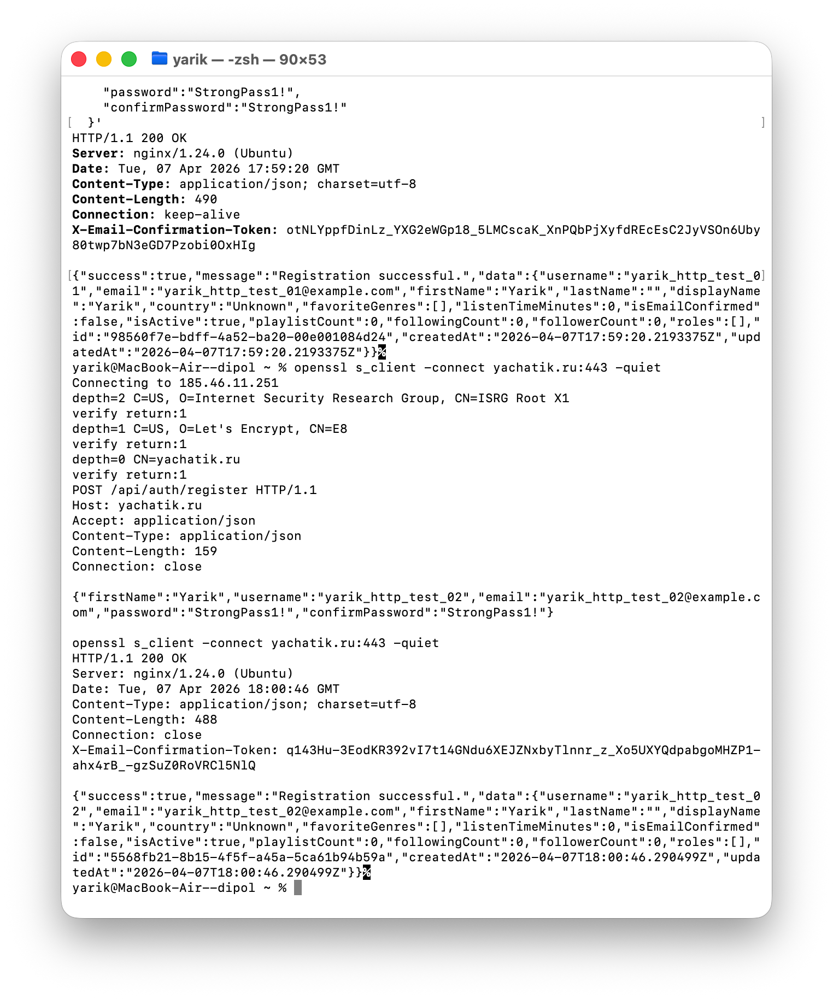
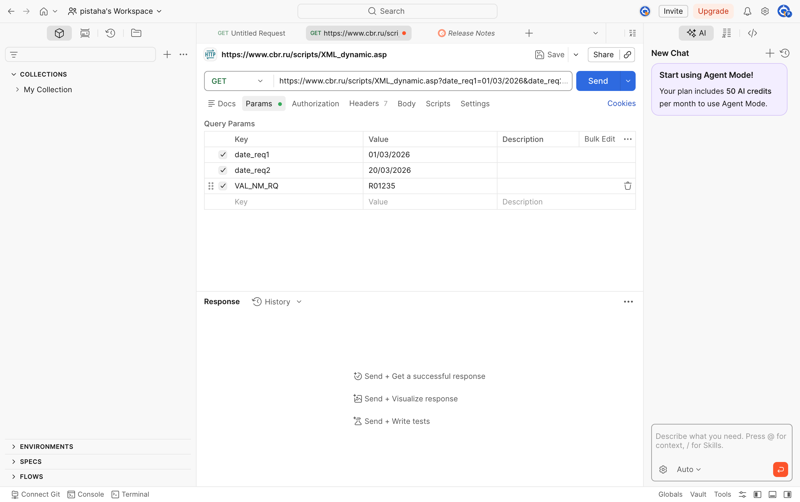
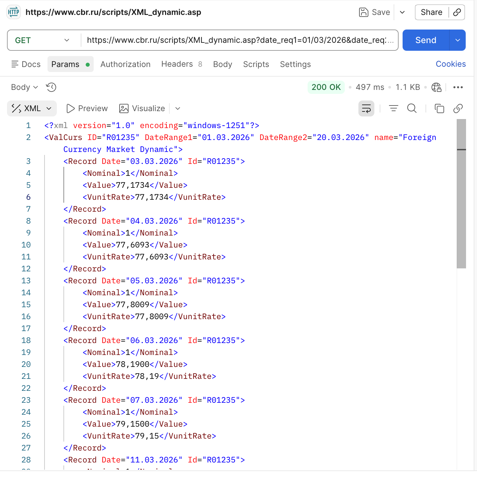

Отчет по лабораторной работе
Цель работы
Изучить основы клиент-серверного взаимодействия по протоколу HTTP, выполнить GET- и POST-запросы разными способами, получить ответы сервера и зафиксировать результаты в форме страницы для публикации на GitHub Pages.
Используемые инструменты
- Терминал macOS.
curl.openssl s_client.nc.- Postman.
- Собственный сервер
yachatik.ru. - API Банка России.
Ход выполнения работы
В ходе работы для CLI и cURL использовался собственный сервер yachatik.ru. Через Postman выполнялся GET-запрос к API Банка России, так как это предусмотрено заданием лабораторной работы.
Раздел 1. Проверка наличия CLI-инструментов
Перед отправкой HTTP-запросов была проверена доступность утилит командной строки.
curl --version
openssl version
nc -hРезультат: утилита curl доступна, установлена версия curl 8.7.1; утилита openssl доступна, установлена версия OpenSSL 3.6.1; утилита nc доступна и выводит справку по использованию.

Раздел 2. GET и POST запросы к веб-ресурсу через CLI
Проверка HTTP-ответа сервера
Сначала был проверен ответ сервера по HTTP.
curl -I http://yachatik.ruРезультат: сервер вернул HTTP/1.1 301 Moved Permanently и выполнил редирект на https://yachatik.ru/.
Отдельный скриншот этой команды среди найденных изображений не обнаружен. Результат указан по данным уже выполненной команды.
Проверка HTTPS-страницы
Затем была проверена главная HTTPS-страница сайта.
curl -i https://yachatik.ru/Результат: сервер вернул HTTP/1.1 200 OK.
Отдельный скриншот этой команды среди найденных изображений не обнаружен. Результат указан по данным уже выполненной команды.
Извлечение API-маршрутов сайта
Из файла app.js сайта yachatik.ru были извлечены API-маршруты. На скриншоте зафиксирован список найденных маршрутов, включая:
/api/auth/login;/api/auth/register;/api/playlists;/api/playlists/public;/api/tracks;/api/users/${userId}.
curl -s https://yachatik.ru/app.js | grep -o '/api[^"'\'' ]*'Результат: в выводе терминала отображен список API-маршрутов, которые далее использовались для выполнения GET- и POST-запросов.

GET-запрос вручную через OpenSSL
Для ручной отправки GET-запроса было установлено TLS-соединение с сервером через openssl s_client.
openssl s_client -connect yachatik.ru:443 -quietПосле подключения был отправлен HTTP-запрос:
GET /api/playlists/public HTTP/1.1
Host: yachatik.ru
Accept: application/json
Connection: closeРезультат: сервер вернул HTTP/1.1 200 OK и JSON-ответ со списком публичных плейлистов.

POST-запрос вручную через OpenSSL
Для ручной отправки POST-запроса было установлено TLS-соединение с сервером через openssl s_client.
openssl s_client -connect yachatik.ru:443 -quietПосле подключения был отправлен HTTP-запрос:
POST /api/auth/register HTTP/1.1
Host: yachatik.ru
Accept: application/json
Content-Type: application/json
Content-Length: 153
Connection: close
{"firstName":"Yarik","username":"yarik_http_test_02","email":"yarik_http_test_02@example.com","password":"StrongPass1!","confirmPassword":"StrongPass1!"}Результат: сервер вернул HTTP/1.1 200 OK. В JSON-ответе указано сообщение Registration successful, что подтверждает успешную регистрацию пользователя yarik_http_test_02.

Раздел 3. Те же запросы через cURL
GET-запрос через cURL
GET-запрос к API собственного сервера был выполнен через curl.
curl -i https://yachatik.ru/api/playlists/publicРезультат: сервер вернул HTTP/1.1 200 OK и JSON-ответ со списком публичных плейлистов. В ответе присутствует сообщение Public playlists retrieved successfully.
POST-запрос через cURL
POST-запрос к API собственного сервера был выполнен через curl с передачей JSON-данных.
curl -i -X POST https://yachatik.ru/api/auth/register \
-H "Content-Type: application/json" \
-d '{
"firstName":"Yarik",
"username":"yarik_http_test_01",
"email":"yarik_http_test_01@example.com",
"password":"StrongPass1!",
"confirmPassword":"StrongPass1!"
}'Результат: сервер вернул HTTP/1.1 200 OK. В JSON-ответе указано сообщение Registration successful, что подтверждает успешную регистрацию пользователя yarik_http_test_01.
Раздел 4. GET-запрос в Postman к API Банка России
Для проверки работы с GUI-инструментом использовался Postman. В нем был выполнен GET-запрос к API Банка России для получения динамики курса доллара США за выбранный период.
https://www.cbr.ru/scripts/XML_dynamic.asp?date_req1=01/03/2026&date_req2=20/03/2026&VAL_NM_RQ=R01235Параметры запроса:
date_req1 = 01/03/2026;date_req2 = 20/03/2026;VAL_NM_RQ = R01235.
VAL_NM_RQ = R01235 соответствует доллару США.

Результат: API Банка России вернул XML-ответ с динамикой курса USD за период с 01.03.2026 по 20.03.2026. На скриншоте ответа зафиксированы записи с датами, значениями Value и VunitRate, например для дат 03.03.2026, 04.03.2026, 05.03.2026, 06.03.2026, 07.03.2026.

Вывод
В ходе лабораторной работы были изучены основы клиент-серверного взаимодействия по протоколу HTTP. Были отправлены GET- и POST-запросы разными способами: через curl и вручную через openssl s_client. Был получен и проанализирован ответ сервера yachatik.ru, включая HTTP-статусы 301 Moved Permanently и 200 OK, а также JSON-ответы API. Для работы с внешним API был использован GUI-инструмент Postman; через него был выполнен GET-запрос к API Банка России и получен XML с курсом доллара США за выбранный период.
Список использованных команд
curl --version
openssl version
nc -h
curl -I http://yachatik.ru
curl -i https://yachatik.ru/
curl -s https://yachatik.ru/app.js | grep -o '/api[^"'\'' ]*'
curl -i https://yachatik.ru/api/playlists/public
openssl s_client -connect yachatik.ru:443 -quiet
curl -i -X POST https://yachatik.ru/api/auth/register \
-H "Content-Type: application/json" \
-d '{
"firstName":"Yarik",
"username":"yarik_http_test_01",
"email":"yarik_http_test_01@example.com",
"password":"StrongPass1!",
"confirmPassword":"StrongPass1!"
}'Ручной GET-запрос через openssl s_client:
GET /api/playlists/public HTTP/1.1
Host: yachatik.ru
Accept: application/json
Connection: closeРучной POST-запрос через openssl s_client:
POST /api/auth/register HTTP/1.1
Host: yachatik.ru
Accept: application/json
Content-Type: application/json
Content-Length: 153
Connection: close
{"firstName":"Yarik","username":"yarik_http_test_02","email":"yarik_http_test_02@example.com","password":"StrongPass1!","confirmPassword":"StrongPass1!"}GET-запрос в Postman:
https://www.cbr.ru/scripts/XML_dynamic.asp?date_req1=01/03/2026&date_req2=20/03/2026&VAL_NM_RQ=R01235Скриншоты
| Файл | Содержание |
|---|---|
images/cli-tools-check.png |
Проверка curl, openssl, nc. |
images/api-routes-extraction.png |
Извлечение API-маршрутов из app.js. |
images/get-playlists-curl-openssl.png |
GET-запрос к /api/playlists/public через curl и openssl s_client. |
images/post-register-curl-openssl.png |
POST-запрос к /api/auth/register через curl и openssl s_client. |
images/postman-cbr-params.png |
Параметры GET-запроса к API Банка России в Postman. |
images/postman-cbr-response.png |
XML-ответ API Банка России с динамикой курса USD. |